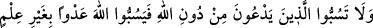
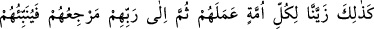
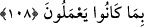

BAŞKALARININ
TANRILARINA SÖVMEMEK
108. Allah’tan başkasına tapanlara (ve putlarına) sövmeyin; sonra onlar da
bilmeyerek Allah’a söverler. Böylece biz her ümmete kendi işlerini câzip gösterdik.
Sonunda dönüşleri Rablerinedir. Artık O ne yaptıklarını kendilerine bildirecektir.
Ey mü’minler, “onların” kâfirlerin “Allah’ı bırakıp da” Allah Teâlâ’ya ibadeti
terkederek “yalvardıklarına”, ilah diyerek duâ ve ibadet ettikleri putlara “sövmeyin”
onları tahkîr etmeyin. Putlara ibadet edenlerden maksat, Mekke kâfirleridir.
Ebüssuûd Efendi (rh.a.) şöyle demiştir: “Allah, sizi de taptıklarınızı da kahretsin!”
gibi sözlerle ilâhlarına ibadet etmeleri sebebiyle onlara hakaret etmeyin.
“Ki onlar da” Allah Teâlâ’yı ve O’nun nasıl anılması gerektiğini “bilmeden aşırı
giderek” sizin onlara söylediğiniz sözün aynısını onlar da size söylemek sûretiyle hakkı
bırakıp bâtıla dalarak “Allah’a sövmesinler.” Çünkü onlar Allah Teâlâ’yı gereği gibi
takdir edebilselerdi buna cür’et edemezlerdi.
“Müşrikler Allah’ın birliğini ve azametini kabul ediyorlardı. Putlara da Allah yanında
kendilerine şefaatçi olması için ibadet ediyorlardı. Nasıl olur da O’na küfrederler?”
diye sorarsan şöyle cevap veririm: Onlar bunu açıktan yapmazlar. Belki yaptıkları
fiiller, zımnen sövmeye götürür. Yine öfke ve hiddet, insana akla uygun olmayan sözler
söyletir. Görmez misin ki müslüman aşırı öfke sebebiyle bir söz söyler de -Allah
korusun- küfrüne sebep olur.
Bu ayet, bir tâatın eğer bir günaha sebeb oluyorsa terk edilmesinin vacibliğine
delildir. Çünkü, şerre sebep olan şey de şerdir. Görmez misiniz ki putlara sövmek ve
onları kötülemek esas tâatlerdendir. Ne var ki büyük bir günaha sebeb olduğu için Allah
Teâlâ onu yasaklamıştır. Bu büyük günah, Allah’a ve Rasûlü’ne sövmek ve beyinsizlik
kapısını açmaktır.
Haddâdî der ki: Burada delil vardır ki bir insan başkasına iyiliği emretmek
istediğinde, emredilen kimsenin bu sebeple sövmek, dövmek ya da öldürmek gibi
bulunduğu durumdan daha beterine düşeceğini bilirse ona o iyiliği emretmemesi ve onu
bulunduğu halde bırakması daha uygundur. Nitekim Sa’dî (k.s.) şöyle demiştir:
Söz söylemeye gücün yoksa, söyleme